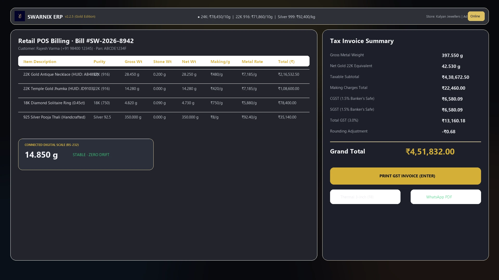
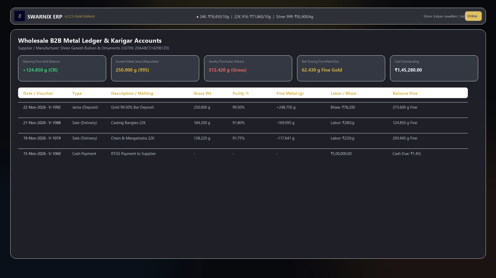
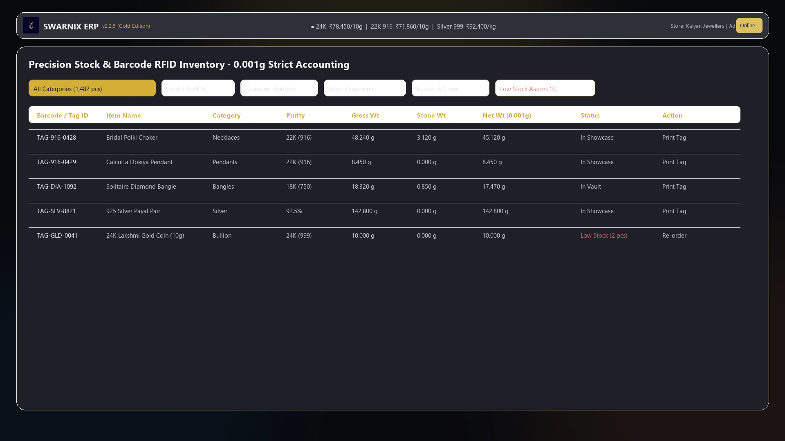
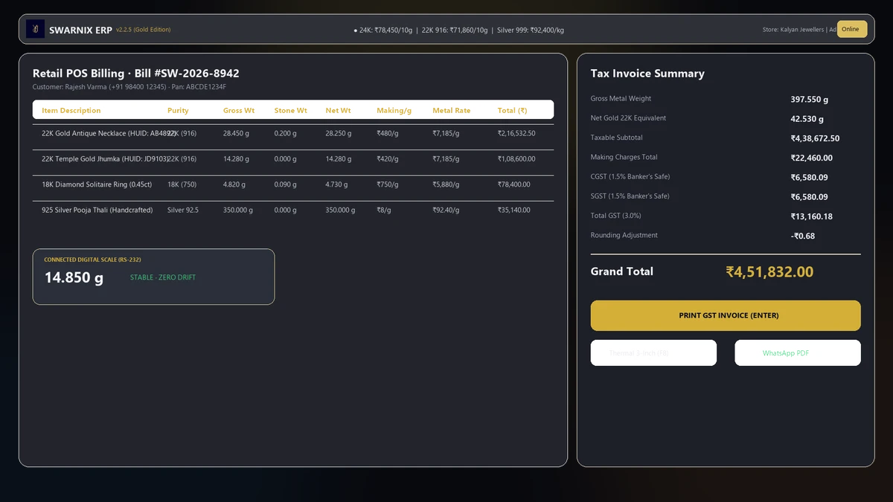
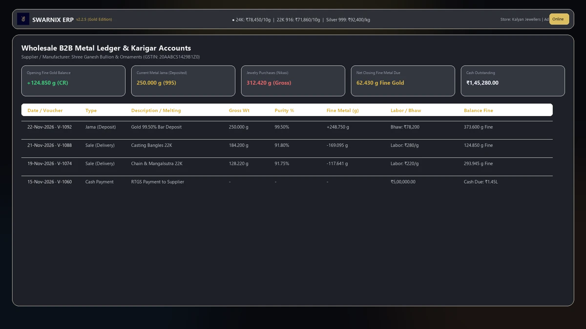
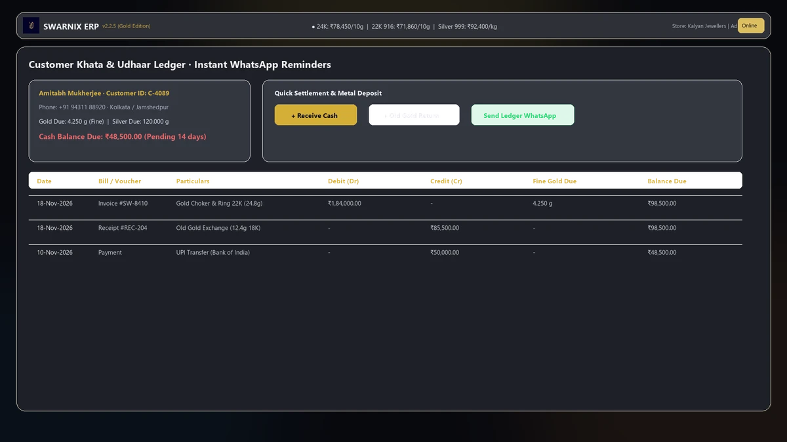
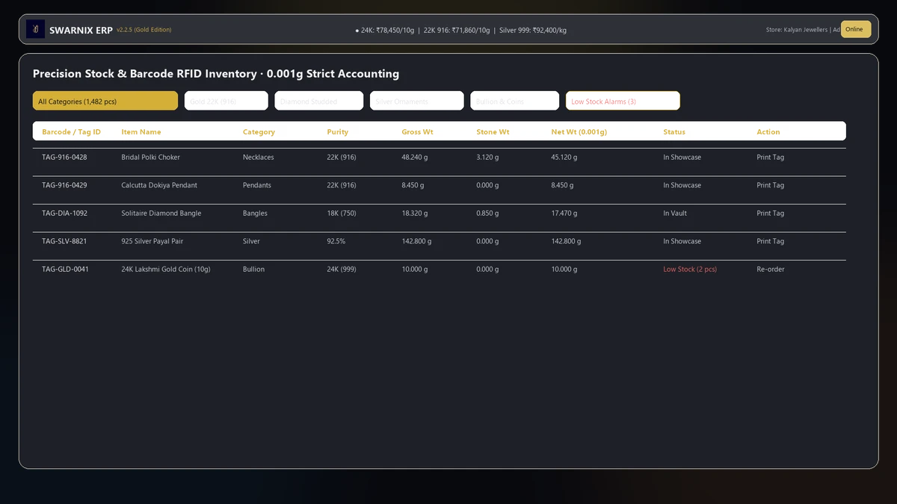
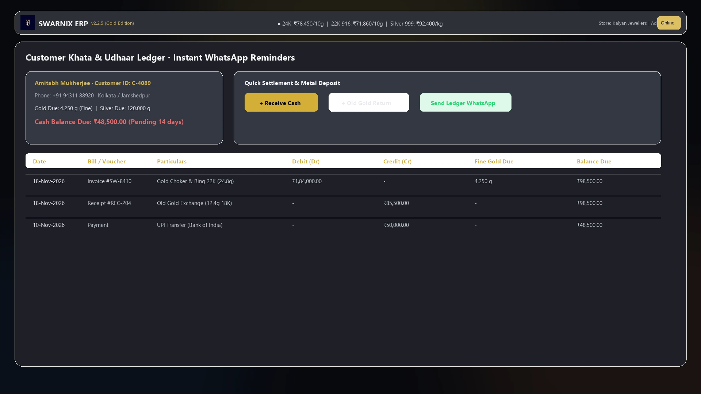

SWARNIX
Jewelry Billing, Wholesale & Retail ERP. One liquid glass platform.
Scroll
Version 2.2.5Gold Edition · Cross-Platform
Legacy jewelry software needs clunky dongles, crashes often, and drifts on decimals.
SWARNIX doesn't.
Engineered with 0.001g micro-precision for gold and silver. Banker's safe GST split, wholesale metal ledgers, instant thermal receipt printing, and live bullion spot rates on one liquid glass interface.
- 0.001g Precisionzero metal weight calculation drift
- GST & BIS HallmarkCGST, SGST & 6-digit HUID invoices
- Wholesale B2B KhataJama vs Sale fine gold ledger
- 5 App PlatformsWindows · Android · macOS · iOS · Linux

01Liquid glass
Luxury frosted glass for jewelry showrooms.
- POS BillingQuick billing, weighing scale sync, and discount calculations.
- Live Bullion RatesSpot gold 24K, 22K (916), 18K and silver 999 MCX feeds.
- Wholesale B2BJama vs Sale metal ledger, Bhaw conversion, and fine gold balance.
- Customer KhataReal-time ledger, cash due, silver fine, and gold fine dues.
- Precision InventoryStock weight down to 0.001g, low stock threshold alarms, and tag printing.
- Dynamic ThemesLiquid glass in Gold, Spark, Flare, Lavender, Dusk, and OLED Black.
Every screenshot is SWARNIX running in real time.





02Cross-Platform Power
Five platforms. One synchronized ecosystem.
Run Swarnix seamlessly across counter touchscreens, billing desktop PCs, owner laptops, and mobile phones with zero cloud subscription lock-in.




One universal database.Every counter synchronized.

02.1Hardware Ecosystem
Plug & play hardware compatibility.
Swarnix connects instantly with USB & Bluetooth 2-inch / 3-inch thermal printers, RS-232 digital precision weighing scales, and wireless 2D/RFID barcode scanners.

03Built for Speed
You already know how to bill at 10× speed.
Keep your hands on the number pad. Hotkeys, instant scale reading, and auto GST calculations let your sales team close bills in under 5 seconds during Dhanteras rush.
F2 New Bill · F5 Live Bullion · Enter Print Invoice.

03.1Where you expect them
Live Bullion & Ledger Accounts, right where your staff needs them.


04Micro-Precision
4096g
Legacy billing drifts by grams over time. SWARNIX locks to 0.001g.
0.001g strict metal weight parity. Banker's safe half-up rounding guarantees CGST + SGST exact parity down to ₹0.01 paise.
04.1Not required
- Internet Required
- Cloud Subscriptions
- Hardware USB Dongles
- Calculation Drift
Swarnix needs none of these. Operates 100% offline with zero cloud outages. Your financial and customer data stays privately inside your showroom.
05Easy setup
Up & running in 5 minutes.
Import your existing inventory from Excel, plug in your thermal printer, and print your first tax-compliant GST bill in minutes.
1Install Swarnix on your Windows PC, Mac, or tablet.
2Import existing stock & customer khatas from Excel.
3Connect digital weighing scale & thermal printer.
4Print your first BIS Hallmark GST invoice.
06Perpetual License
One-time purchase. No monthly fee.
Get lifetime access to Swarnix ERP for your showroom. Your license key and download link arrive immediately by email.
₹4,999 one-time special launch price. Full 30-day money-back guarantee.
Secure checkout with instant activation. By booking you agree to our Terms and Refund Policy. View our Privacy Policy.
₹4,999
once. Lifetime updates included.
Regular price ₹7,999 after launch celebration.
- Complete Store License (Multi-counter ready)
- 0.001g micro-precision calculation engine
- Retail GST & Wholesale B2B Karigar Khata
- Thermal (2"/3") & A4 BIS Hallmark invoices
- 100% Offline SQLite database with encrypted backups
06.1System Specs
What your system needs.
- Operating System
- Windows 10/11 (64-bit), macOS 12+ (Apple Silicon or Intel), Android 8.0+ tablet/phone, or Linux (Debian/Ubuntu/Arch).
- Memory
- 2 GB of RAM minimum. 4 GB or more recommended for high-volume billing counters.
- Storage
- Only 500 MB for Swarnix. SQLite database scales to 500,000+ invoices without slowdown.
- Printers
- Any USB or Bluetooth ESC/POS thermal printer (58mm / 80mm) and standard A4 laser printers.
- Weighing Scales
- Supports standard RS-232 serial and USB digital gold weighing scales with continuous streaming.
- Cloud & Internet
- Not required for daily operations. Optional cloud backup and WhatsApp PDF receipts work over standard Wi-Fi.
06.2Roadmap
Continuous innovation for jewelers.
December 2026
Swarnix 2.2 Release
Full Liquid Glass UI, Wholesale B2B Karigar ledger, and thermal 3-inch printing.
January 2027
Cloud Multi-Store Sync & Mobile Owner App
Real-time revenue monitoring and stock transfer across multiple branch showrooms.
February 2027
AI Voice Billing & Smart RFID Showcase
Hands-free voice item entry and instantaneous showcase tray stock scanning.
All roadmap features are included with your perpetual license at no extra charge.
06.3Supported Hardware
Hardware tested with SWARNIX.
See tested weighing scales, thermal printers, barcode scanners & tablets→06.4Questions
What jewelers ask most.
Does SWARNIX work completely offline without internet?
Yes, 100%. Swarnix stores all customer ledgers, stock, and bills locally inside an encrypted SQLite V12 database. You will never experience downtime during counter billing, even when internet connections drop.
How does SWARNIX prevent GST rounding errors?
Standard accounting packages calculate taxes on rounded line items, creating cumulative drift. Swarnix uses banker's safe half-up rounding, ensuring intra-state CGST (1.5%) + SGST (1.5%) always equals total tax (3.0%) down to the exact ₹0.01 paise, fully compliant with Indian GST audit norms.
Can I manage Wholesale B2B Karigar metal ledgers (Jama vs Sale)?
Yes. Swarnix has a dedicated Wholesale B2B engine where you can record Fine Gold/Silver deposits (Jama), delivery of ornaments (Nikasi), Bhaw cut conversions, making charges per gram or per piece, and net metal balances.
Does it print BIS Hallmark details and HUID barcodes on bills?
Yes. Every tax invoice can display your store's BIS Hallmark registration number, the 6-digit alphanumeric HUID code per jewelry piece, purity in karats (22K 916, 18K 750), and verification QR codes.
Can I connect my digital precision weighing scale directly?
Yes. Swarnix connects with standard RS-232 serial and USB jewelry scales. When an item is placed on the scale, the exact weight (down to 0.001g) locks into the bill automatically without typing.
Is there any monthly or annual renewal fee?
No. Swarnix is sold as a perpetual license. You own your software and database permanently without recurring subscriptions.
Ready to upgrade your jewelry showroom to Swarnix?
Book Swarnix ERP, ₹4,999